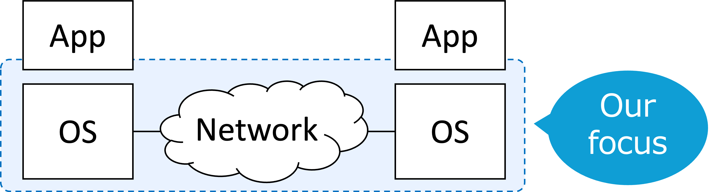

Overview
中村研究室は 東京大学 情報基盤センター ネットワーク研究部門、 東京大学 工学系 研究科 電気系工学専攻 所属の、2024年4月に発足した研究 室です。
主な研究分野は、インターネット、情報通信ネットワーク、ネット ワークにおける経路制御技術、ネットワーク仮想化、高性能ネット ワーク、システムソフトウェアなどです。インターネットに代表さ れる情報通信ネットワークを構成する技術を主眼に、ネットワーク の更なる高度化と高性能化を目指して研究を行っています。
Member
Faculty
- Ryo Nakamura (Assoc. Prof), mail: upa __at__ nc.u-tokyo.ac.jp
Student
- Rin Suzuki (M2)
- Jaesol Ahn (M1)
- Yusuke Izume (M1)
Research
Network Architecture
Networked Systems
Publications
See this page.
Contact
Location: 東京大学 柏2キャンパス
- Information Technology Center, The University of Tokyo 6-2-3 Kashiwanoha, Kashiwa-shi, Chiba 277-0882, Japan
本研究室は、おなじく東京大学情報基盤センターネットワーク研究 部門の先生方の研究室ととも に Computer Network Laboratory (CNL)というグループを構成しており、柏 2キャンパスおよび浅野キャンパスの学生居室等を共有しています。
研究室を志望する学生さんへ
本研究室は、情報通信ネットワークとシステムソフトウェアを主な 対象としています。インターネットを構成するプロトコルや経路制 御技術、ネットワークを利用するためのシステムソフトウェアなど、 比較的低レイヤ(ネットワーク的に言うとLayer-3以下、オペレーティ ングシステム的に言うとSystem callより下あたり)を構成するシス テムやソフトウェアに興味のある学生さんを歓迎します。
